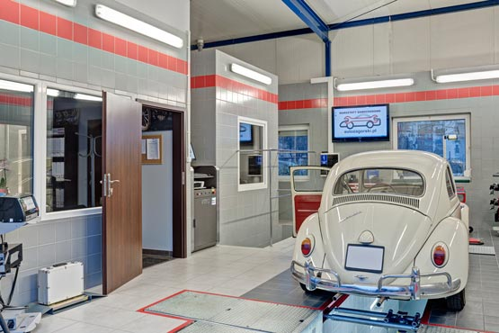
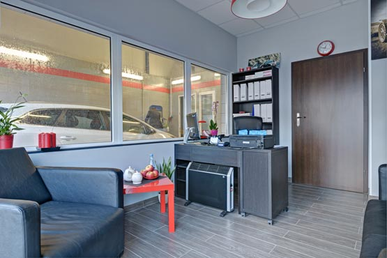

Станція контролю транспортних засобів AUTO ZAGÓRSKI
надійні техогляди, реєстраційні огляди і висока якість обслуговування.
Визначити трасуЯк доїхати?
Станція контролю
транспортних засобів
AUTO ZAGÓRSKI
вул. Польна 40, 60-553 Познань
Визначити трасу як доїхати
Години роботи
Понеділок-П’ятниця: 8-22
Субота: 8-15
Неділя та свята: вихідний.
Зателефонуйте до нас
+48 570 521 277
Немає необхідності домовлятись про приїзд.
Просто приїжджайте
в годинах праці.
Інформацію та ціни Ви знайдете нижче.
Сфера послуг станції контролю транспортних засобів
Надійний технічний огляд, безкоштовне визначення вартості ремонту, не потрібно домовлятись, привабливі рекламні акції, заплатите картою або готівкою.
Технічний огляд
аналізатор вихлопів СО2 • комп'ютерний контроль фар • перевірка відповідності документів • перевірка системи гальм на стенді випробовування двигуна • комп'ютерна перевірка геометрії • комп'ютерна перевірка амортизаторів • діагностика підвіски на люфтах • тестування лаку
Реєстраційний огляд
транспортні засоби до 3,5 т • транспортні засоби на газу • транспортні засоби після ДТП • транспортні засоби, що імпортуються з-за кордону • мотоцикли
Автомобільна мийка
мийка під тиском • воскування • пилососення салону • прання оббивки • технічне обслуговування шин
Сервіс кондиціонування
Перевірка герметичності системи • обкурювання • поповнення холодоагенту

Найвища якість обслуговування
На станції контролю транспортних засобів AUTO ZAGÓRSKI очікуйте найвижчу якість обслуговування. .
"Ваші відгуки для нас дуже важливі. Завдяки ним ми ще більш стараємось"
Томаш Загурськи, власник станції
Станція контролю транспортних засобів AUTO ZAGÓRSKI
Наша станція контролю транспортних засобів була урочисто відкрита в грудні 2014 р. Таким чином мережа автомобільних майстерень AUTO ZAGÓRSKI була розширена на ще один сучасний об’єкт.
Завдяки репутації майстерень AUTO ZAGÓRSKI, станція одразу отримала групу нових задоволених клієнтів. Ми також можемо їм запропонувати ще більше комплексне обслуговування.
Станція має зручне для водіїв місце розташування, в районі середмістя, в познанському районі Єжице. Пропонуємо широкий спектр послуг у сфері автомобільної діагностики. Відвідайте нас і ознайомтесь з новими стандартами обслуговування клієнта. Зустріньте надійних, висококваліфікованих діагностів з величезним професійним досвідом і людським підходом до водіїв і автомобілів.
- 
-

- 
-

Часто задані питання
Що таке техогляд автомобіля?
Під час техогляду перевіряються найважливіші системи транспортного засобу. Він має дуже важливе значення для безпеки та покращення показників користування.
Які документи необхідно привезти на діагностику?
Це залежить від виду транспортного засобу і інших умов. Зв’яжіться з нами – ми надамо вичерпну інформацію.
Чи надаєте Ви додаткові послуги до діагностики?
Так! Рекомендуємо скористатись нашими привабливими знижками. Більше інформації на цій сторінці, дивіться вище.
Чи я можу заплатити платіжною картою?
Так. На станції контролю транспортних засобів Ви можете заплатити картою або готівкою. Досить бігати і шукати
банкомати! 
Чи Ви можете одразу відремонтувати дрібні неполадки?
Так, з задоволенням допоможемо. Запрошуємо в автомобільну майстерню AUTO ZAGÓRSKI. Майстерня знаходиться неподалік (бл.100 м) від нашої станції контролю транспортних засобів. Пропонуємо помірні ціни і найвищу якість обслуговування.
Про деталі питайте на станції.